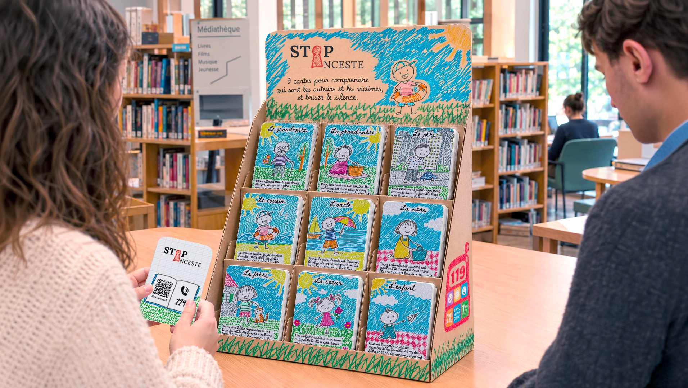
Neuf cartes pour briser le silence sur l’inceste
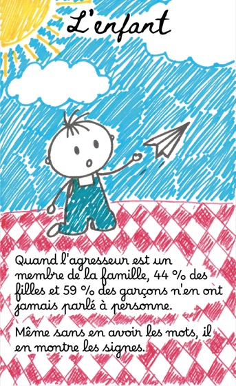
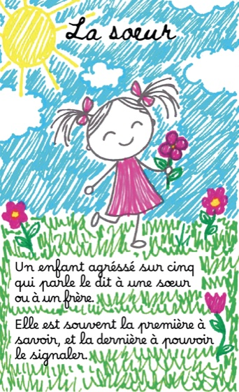
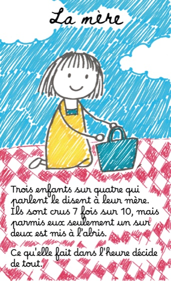
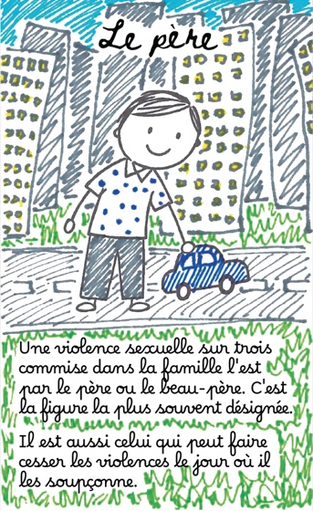
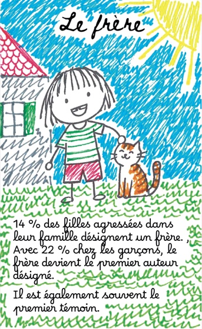
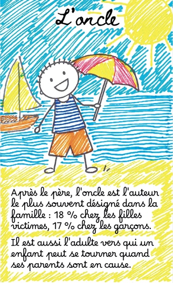
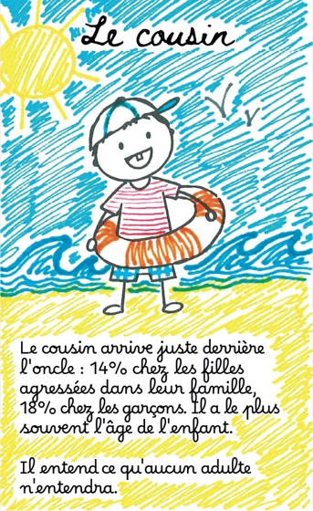
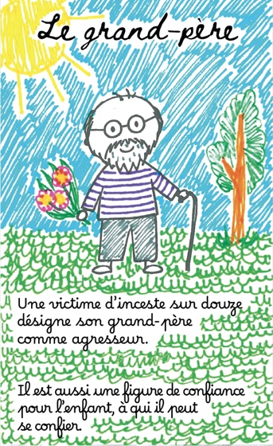
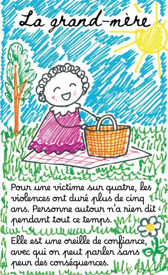
Anatomie d’une carte
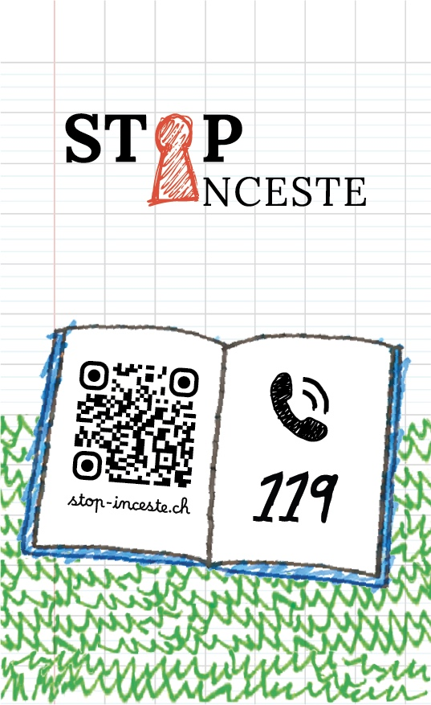
Le nom
Une scène ordinaire
La donnée
La nuance
L’association
La page web de la campagne
Le numéro d’urgence
L’ampleur
Un enfant par classe
2,9 % des enfants subissent des violences sexuelles commises dans leur famille avant leurs 18 ans. Dans une classe de trente, cela fait un élève.
Inserm-Ciase 2021, Population & Sociétés n° 612, tableau A.1 : 4,6 % des femmes et 1,2 % des hommes.4 fois plus
de filles que de garçons : 4,6 % contre 1,2 %. L’inceste touche les deux, jamais dans les mêmes proportions.
Même enquête, même tableau.× 2,9
Le risque est multiplié par près de trois quand l’enfant est en situation de handicap, et par 4,6 en cas de déficience intellectuelle.
OMS 2012, repris par la CIIVISE (mars 2022). Donnée internationale et ancienne.5 ans
Pour une victime sur quatre, les violences ont duré plus de cinq ans. Elles commencent en moyenne à sept ans et demi.
CIIVISE, corpus de 30 000 témoignages volontaires — non représentatif.2 000
condamnations par an, pour 160 000 enfants victimes de violences sexuelles chaque année.
CIIVISE, novembre 2023. Estimation, pas un recensement.Vous n’avez pas à être sûr pour appeler.
Évaluer la situation, c’est le métier de la personne qui décroche. Le doute suffit.
- Gratuit depuis tous les téléphones
- Vingt-quatre heures sur vingt-quatre, sept jours sur sept
- N’apparaît sur aucun relevé téléphonique détaillé
- Un tchat et un formulaire sécurisé sur allo119.gouv.fr
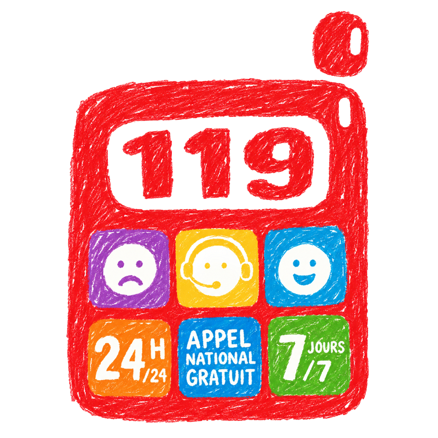